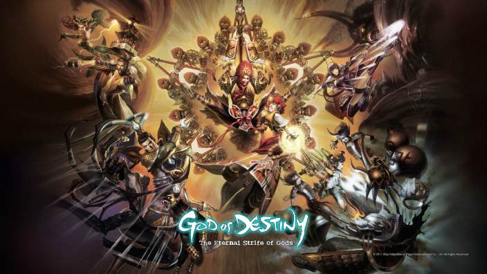
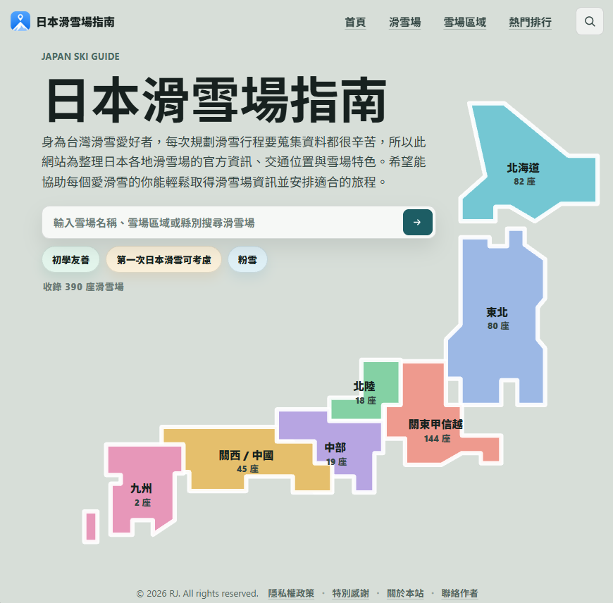
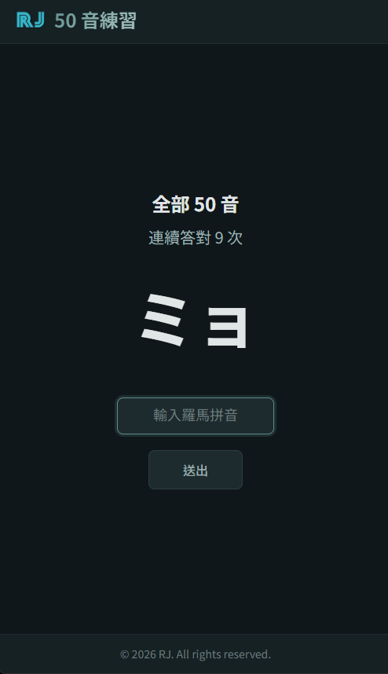

10+
年遊戲開發經驗
從遊戲開發、產品設計走向後端工程。
理解一個產品存在的目的，也親自動手將它完成。遊戲經驗讓我理解使用者與團隊合作，後端工程則讓我把想法落實成穩定系統。
從數字、資訊與結構化思考，建立分析問題的基礎。
從執行到帶領團隊，參與 PC 與手機遊戲完整產品週期。
投入商業系統開發，處理 POS、EC 與外部服務整合。
在工作之外進修應用統計，把產品、工程與分析能力串在一起。

系統、角色、數值與電競平衡設計
管理人員同時也負責多項系統、介面、角色技能設計與製作
整體設計方向、團隊管理與跨部門協作
不只處理工作任務，也理解門市、消費者與客服實際怎麼使用系統。
曾和企劃、程式、美術、QA 共同交付產品，知道如何把需求說清楚。
功能上線不是終點；監控、除錯、回饋與持續改善才是日常。


就是右邊這位老師要我回來念的。
重新認識與學習統計基礎與應用知識。
用統計方法來檢驗和支持自己的論點與判斷，而不是僅憑口才或經驗。
在職進修的價值，是能把課堂方法立刻帶回真實工作情境。
努力工作、開心生活。